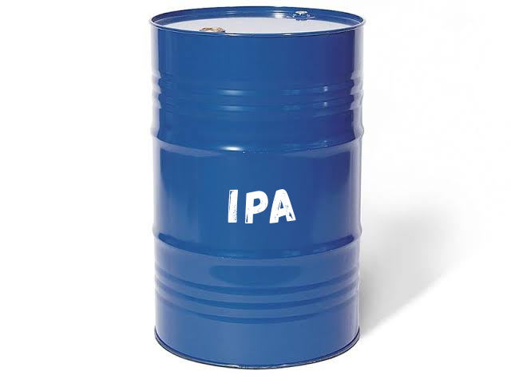
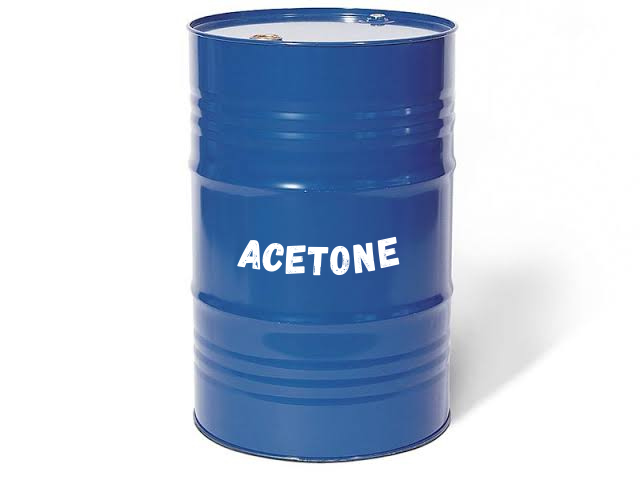

Isopropyl Alcohol (IPA)
Isopropyl alcohol (IUPAC name propan-2-ol and also called isopropanol or 2-propanol) is a colorless, flammable organic compound with a pungent alcoholic odor.
More Details

Acetone
Acetone is a colorless liquid that is also known as propanone. It is generally recognized as safe (GRAS) in certain concentrations, with low toxicity, but high flammability.
More Details
Toluene
Toluene is a clear, colorless liquid with a distinctive smell. Toluene occurs naturally in crude oil and in the tolu tree. It is also produced in the process of making gasoline and other fuels.
More Details